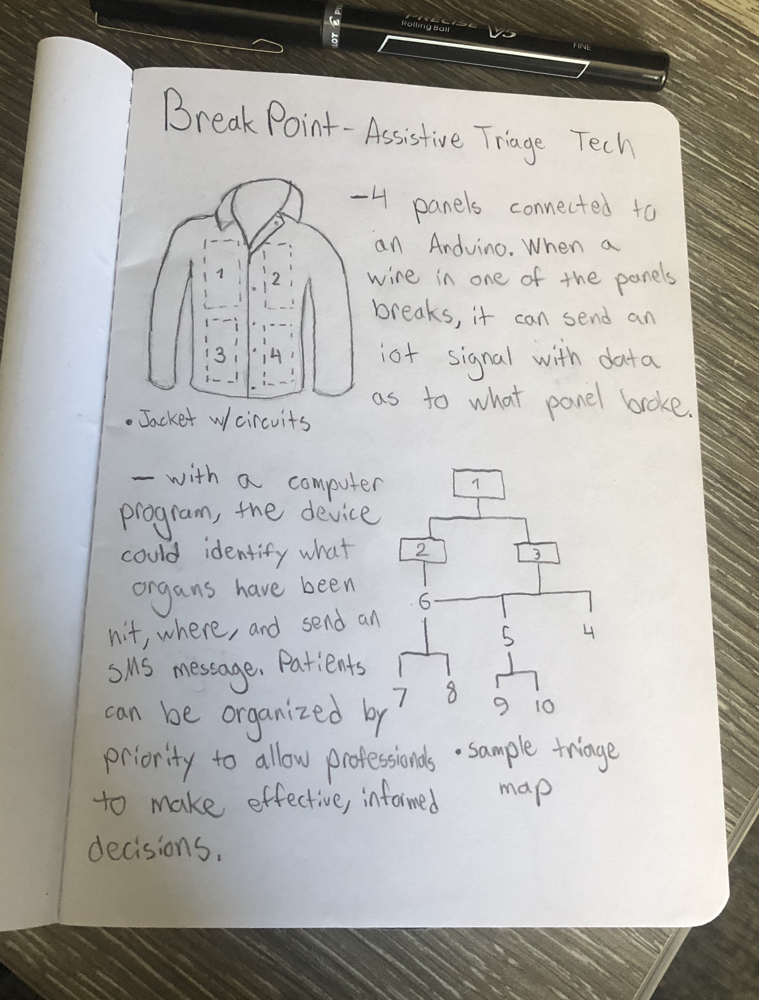

OVERVIEW
Breakpoint is a project built by myself, Aidan Maddox, and a few other friends aimed at rethinking the medical triage process and exploring innovations that might cut down on first response time for medical assistance.
THE PROBLEM

In the United States, Emergency Medical Services respond to 37 million emergency calls every year. The average arrival time is 7 minutes. After a gunshot or punture wound, generally the patient should be recieving medical care under 10 minutes from the puncture.
When it comes to medical response, every second is life or death and any innovation to streamline the triage process could increase efficiency and save lives. With modern technology, it's possible for medical responders to have detailed and accurate information on wounds and injuries before they even arrive at the victim's location.
IDEATION
We focused on two groups likely to incur gunshot wounds, police and military, and focused on a key element shared amongst them - their uniform. With evolutions in wearable technology, we believed it would be possible to incorporate a series of sensors within the uniform that can utilize communication technology to share critical health and vitals information to medical resonders immediately and accurately.
A series of sensors would track the vitals of the individual wearing the vest, and when one of the sensors was triggered, it would send SMS information to medical responders informing them of their location, where they were hit on the body, and the status of the body (blood flow, pulse, etc. ).

This would allow medical responders to prepare the proper tools needed for an operation, and with a shared database a system would be able to group and indicated many instances in real time that could suggest to medical responders the priority of acton.
PROTOTYPE


For the prototype, we built it using foam for shaping, a jacket we found from Goodwill, and a series of Arduinos as the sensors. For testing and prototyping we used a special kind of 3D printed filament that has conductive properties. When the 3D printed system broke, a sensor would trigger indicating where on the jacket the break occured and start sending SMS messages with updates on the breakpoint.
PRESENTATION
REFLECTION
This was my first time working on a project with a medical device, and while something like this is on the outskirts of the realm of medical devices, it allowed me to engage witht the process of desiging something for human health and security.
If I could change one thing about this project, it would be to incorporate more user testing. Because of the strict timeline, most of the design process was done internally and allowed us to use the knowledge we'd built up through school and experience, but prevented us from enaging with potential users and applying empathy to discover useful design solutions.
I'm incredibly grateful for my partners and everyone who had a hand in putting this together, and I look forward to the new technology and solutions we'll design in the future.